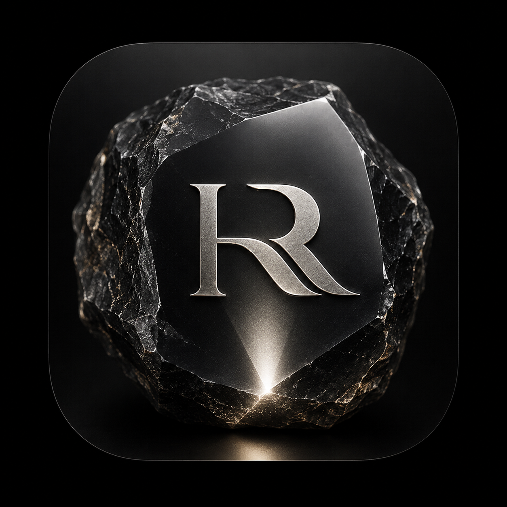

<!doctype html><html lang="zh-CN"><meta charset="utf-8"><title>砺石启动图标静态预览</title><style>*{box-sizing:border-box}body{margin:0;background:#f6f5f1;color:#17221d;font:16px 'Microsoft YaHei',sans-serif}main{width:880px;padding:30px 36px}h1{font-size:24px;margin:0 0 8px}p{margin:0 0 24px;color:#596a61;font-size:14px;line-height:1.7}.board{display:grid;grid-template-columns:250px 1fr;gap:28px}.original{width:240px;height:240px;border-radius:12px}.original img{width:100%;height:100%}h2{font-size:16px;margin:0 0 16px}.sizes{display:flex;align-items:center;gap:32px}.sample{text-align:center;display:flex;align-items:center;flex-direction:column;gap:8px}small{color:#596a61;font-size:12px}.mask{position:relative;overflow:hidden;background:black}.mask img{position:absolute;width:150%;height:150%;left:-25%;top:-25%;object-fit:fill}.rounded{border-radius:24%}.circle{border-radius:50%}section+section{margin-top:28px}footer{margin-top:26px;border-top:1px solid #dfe4de;padding-top:14px;font-size:13px;color:#596a61;line-height:1.7}</style><main><h1>砺石 · 已选图标</h1><p>原图保留，圆形与圆角为桌面静态遮罩模拟；不是手机截图。</p><div class="board"><div><h2>提供的原图</h2><div class="original"></div></div><div><section><h2>圆角遮罩</h2><div class="sizes"><div class="sample"><div class="mask rounded" style="width:128px;height:128px"></div><small>128px</small></div><div class="sample"><div class="mask rounded" style="width:64px;height:64px"></div><small>64px</small></div><div class="sample"><div class="mask rounded" style="width:48px;height:48px"></div><small>48px</small></div></div></section><section><h2>圆形遮罩</h2><div class="sizes"><div class="sample"><div class="mask circle" style="width:128px;height:128px"></div><small>128px</small></div><div class="sample"><div class="mask circle" style="width:64px;height:64px"></div><small>64px</small></div><div class="sample"><div class="mask circle" style="width:48px;height:48px"></div><small>48px</small></div></div></section></div></div><footer>按自适应图标前景 108 / 可见区 72 的比例模拟。具体形状、裁切及系统动画由手机启动器决定，真实设备未运行。<br>未另画单色图标，通知栏小图标保持原配置。</footer></main></html>